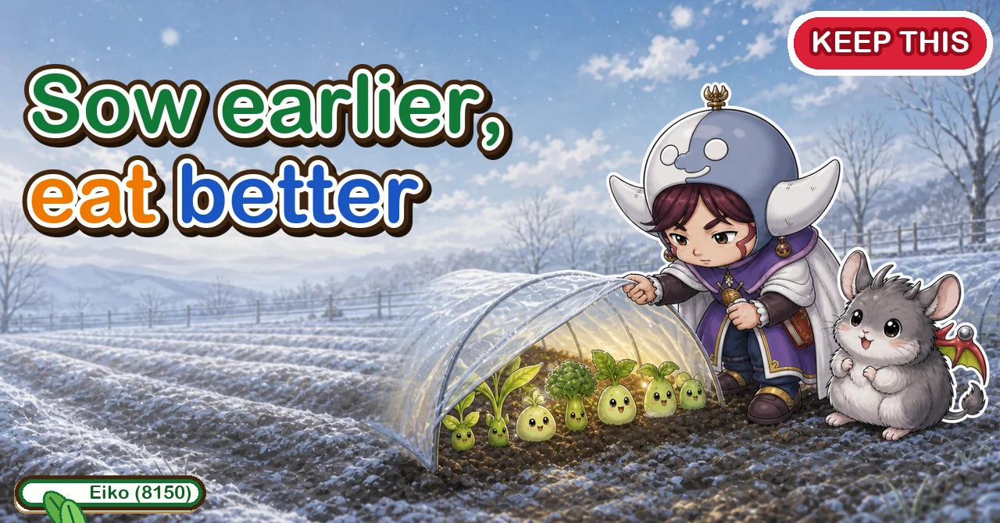
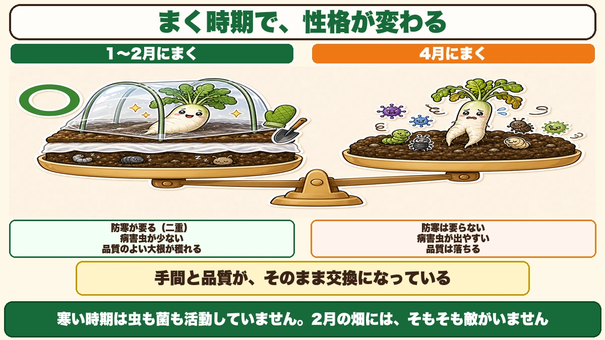
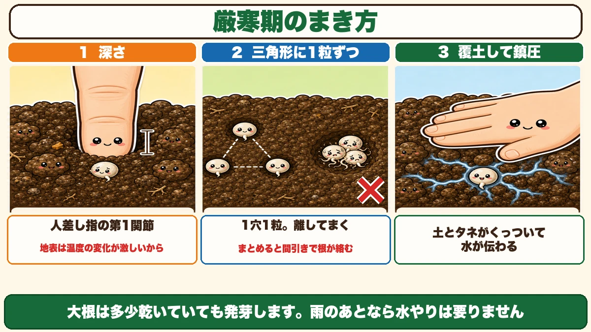
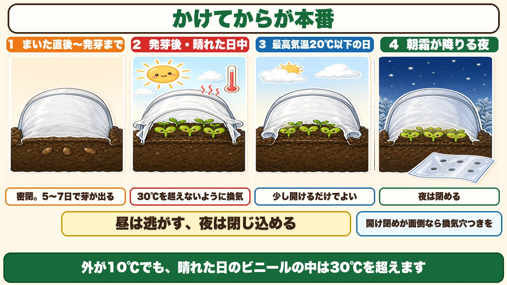
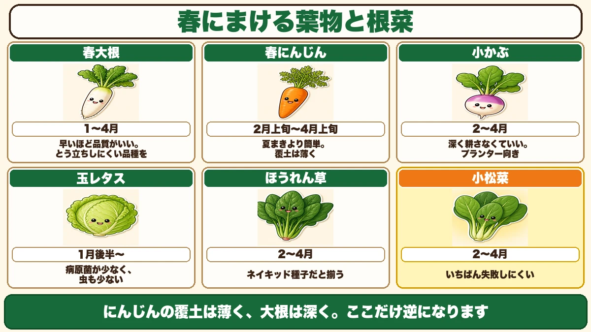

The earlier you sow, the better it eats 🥬 Late winter beats spring

🥬 "My spring mooli always go hollow."
🥬 "I put a tunnel up and cooked everything inside it."
🥬 "I assumed I should wait until it warmed up."
Hello, I'm Eiko. Eight years of growing vegetables organically and without pesticides, and a teaching licence in science.
It's late winter. It's still cold.
And the people who sow now get the best of it.
The point, up front:
Spring vegetables are better quality the earlier they're sown.
The price is frost protection. Effort traded directly for quality — and the trade is unusually explicit, which is what makes this time of year interesting ☺️
Sowing date changes the crop's character

What this diagram says （図解の文字）
- Sowing date changes the character
- ○ Sown in the deep cold — protection needed (two layers) ／ few pests and diseases ／ the mooli are good quality
- Sown in spring — no protection needed ／ pests and diseases appear ／ quality drops
- Effort and quality are traded directly
- In the cold, neither insects nor fungi are active. There is simply no enemy in the garden
Mooli can be sown in spring, summer or autumn. The spring window is long — from the depths of winter through to mid spring in most places.
And within that same window, the result is completely different depending on when you sow.
Why earlier is better
Simply: in cold weather neither insects nor fungi are active.
Mooli pests start moving once temperatures rise, and so do the fungal pathogens. A garden in the deep cold has no enemy in it.
And a root that grew slowly in the cold is dense. You can feel the difference when the knife goes in, compared with one that grew in a hurry.
What you put in as effort comes out as quality. I like that trade.
The enemy of spring sowing is bolting
Bolting is the plant switching over to making flowers. A stem rises from the centre and everything goes into it.
Once it does:
- mooli stop thickening and go hollow
- leaf crops turn tough and bitter
- turnips split
In other words, they stop being food.
Why spring in particular
Most vegetables work on this rule: a plant that has reached a certain size and is then exposed to cold concludes that it has overwintered, and sets flower buds.
Spring sowing walks straight into that condition. Sow, grow a little, and there's still cold weather to come. From the plant's point of view: "I've got through a winter — time to reproduce."
The answer is entirely in the variety
Choose a variety that resists bolting.
Look for "for spring sowing" or "slow to bolt" on the packet. As with everything else, the answer is on the back.
Get this wrong and there's no recovering, because it isn't a growing problem — it's a variety problem. I once sowed an autumn variety in spring and bolted the entire row. Everything about how I grew them was correct.
Sowing mooli in the cold

What this diagram says （図解の文字）
- How to sow in the deep cold
- 1 Depth — to the first joint of your index finger — because the surface swings in temperature
- 2 In a triangle, one seed each — one per hole, spaced apart ／ × put together, the roots tangle at thinning
- 3 Cover and firm — seed and soil in contact, so water is carried to it
- Mooli germinates even when it's a bit dry. After rain you don't need to water
Depth: the first joint of your finger
Sowing in the cold, go slightly deeper than usual — as deep as your index finger goes to the first joint.
Why: the top centimetre swings wildly in temperature. A little further down the day-to-night difference is smaller and steadier, and a seed can get on with things.
A triangle, one seed per hole
For station sowing:
- make three holes in a small triangle
- one seed in each
- about a finger's width between them
Don't put three seeds in one hole.
They germinate with their roots tangled, and thinning one pulls up the one you wanted. Spaced apart, you simply cut the surplus off with scissors.
Cover, then firm
Once the soil is over the seed, press it down with your palm.
Unglamorous, and it's what makes germination even.
Seed and soil in contact means the soil's moisture reaches the seed. Tipped on loosely, there's a layer of air around the seed and the water never arrives.
Water only when you need to
Counter-intuitively, mooli germinates even in fairly dry soil.
If it rained recently, don't water. This is where mooli differs from spinach and carrots.
Water lightly only if the soil is bone dry and you want them up sooner.
Ventilating the tunnel is the real skill

What this diagram says （図解の文字）
- The work starts once it's up
- 1 From sowing to germination — sealed. Up in 5–7 days
- 2 After germination, sunny daytime — ventilate so it doesn't exceed 30 °C
- 3 Days with a maximum of 20 °C or less — opening it slightly is enough
- 4 Nights with morning frost — close it at night
- Let it out by day, hold it in at night ／ if opening and closing is a nuisance, use a pre-vented film
- Outside at 10 °C, inside a sunny tunnel exceeds 30 °C
Putting it up isn't the job
My first tunnel failure was heat. I put it on and left it, and the inside was like midsummer. Every seedling was finished.
Sealed until germination
- Lay fleece directly on the soil
- Hoops over that, with film
- Bury the hem to seal it
Five to seven days and they're up. Until then you don't need to open it — the warmth inside is the point.
Then start ventilating
Three rules:
- Don't let it exceed 30 °C inside
- On days with a maximum of 20 °C or less, opening the hem here and there is enough
- When morning frost is likely, close the hem at night
Day and night are opposites: let it out by day, hold it in at night.
On a clear late-winter day the inside of a film tunnel gets startlingly hot. Outside 10 °C, inside over 30 °C. That's what a greenhouse is.
Six things to sow now

What this diagram says （図解の文字）
- Leaf and root crops you can sow in spring
- Spring mooli — earlier is better quality. Choose a bolt-resistant variety
- Spring carrots — easier than summer sowing. Cover thinly
- Small turnips — no deep digging needed. Good in containers
- Head lettuce — few pathogens and few insects
- Spinach — naked seed germinates evenly
- Mustard greens (komatsuna) — the easiest of all
Mooli
Earlier is better. Choose for bolt resistance.
Carrots
Easier than a summer sowing. The usual carrot failure is drying out, and in spring the soil doesn't dry.
Carrot seed wants light, so the covering is thin — the opposite of mooli. And firm it well.
Small turnips
No deep cultivation needed, so they grow in containers. Same family as mooli, but the season is short enough that bolting is less of a worry. The easiest soil preparation of anything here.
Head lettuce
A spring lettuce sowing is remarkably straightforward, for three reasons:
- few fungal pathogens in the cold
- lettuce suffers little insect damage anyway
- a spring sowing reduces even that
And lettuce seed goes dormant above about 25 °C — so a cool sowing is simply the sensible one.
Spinach
Spinach seed is protected by a hard case and germinates unevenly. Naked seed — with the case removed — makes a visible difference. If spinach has frustrated you, change only this.
Mustard greens
The hardest crop in the world to fail with. Fast, and cold-tolerant. If you don't know what to sow, sow this and you won't be wrong. Also the best one to grow with children.
To sum up
- ✅ Earlier sowing = better quality, at the cost of frost protection
- ✅ Deep cold: few pests, good quality. Spring: no protection, but pests arrive
- ✅ Bolting is the enemy, and variety choice is the whole answer
- ✅ A grown plant exposed to cold decides it has overwintered and sets flower buds
- ✅ Sow mooli to the first joint of your finger — the surface swings too much
- ✅ Station sow in a triangle, one seed per hole, spaced
- ✅ Cover and firm. Contact is how water arrives
- ✅ Mooli germinates in slightly dry soil; after rain, don't water
- ✅ Tunnel sealed until germination, 5–7 days
- ✅ Then ventilate below 30 °C. Let it out by day, hold it in at night
- ✅ Pre-vented film if the daily routine won't work
- ✅ Six to sow: mooli / carrots / turnips / lettuce / spinach / mustard greens
- ✅ Carrots thin covering, mooli deep. They're opposites
- ✅ Naked seed for spinach; if in doubt, mustard greens
You don't have to do all of it. Buy one packet of mustard greens. Sow it now and lay fleece over it. That's your first harvest of the year 🥬
Thank you for reading!